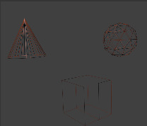

Панель «Матеріал» -- Material Panel¶
Матеріали можуть бути пов'язані з об'єктами та даними об'єктів на панелі «Матеріал» у вкладці «Матеріал» -- . Тут ви можете управляти тим, як матеріали пов'язуються з об'єктами, сітями тощо та активувати матеріал для редагування на решті панелей.

Панель «Матеріал» -- Material.
Гнізда матеріалів¶
- Активний Матеріал -- Active Material
Гнізда матеріалів об'єкта показуються в огляді списком -- List View.
- Спеціальне -- Specials
- Копіювання та вставляння виділеного гнізда матеріалу.
Одночасно кілька матеріалів¶
Для сітей може бути призначено більше ніж один матеріал. Матеріали можуть розкладатися по граням, як описано тут -- Одночасно кілька матеріалів page. У Режимі Правки -- Edit Mode з'являються наступні засоби:
- Признач -- Assign
- Призначає матеріал з виділеного матеріалового гнізда на виділені грані.
- Виділ -- Select
- Виділяє грані, на які призначено матеріал з виділеного гнізда.
- Зневиділ -- Deselect
- Знімає виділення з граней, на які призначено матеріал з виділеного гнізда.
Іменування та пов'язування матеріалу¶
- Матеріал -- Material
- Меню блоку матеріалових даних -- Data-Block Menu для виділеного гнізда з матеріалом.
- Вузли -- Nodes
- Перемикач
 , який вмикає розроблення матеріалу за допомогою укладу вузлів, а не використовуючи устави Material/Ramps/Shaders.
, який вмикає розроблення матеріалу за допомогою укладу вузлів, а не використовуючи устави Material/Ramps/Shaders. - Блок даних пов'язувань -- Data-block Links
Визначає, чи буде матеріал пов'язаний до Об'єкта -- Object, чи до даних об'єкта -- Data.
Вибірник «Пов'язування» -- Link має два варіанти -- «Дані» -- Data та «Об'єкт» -- Object. Ці два варіанти у меню визначають чи буде матеріал пов'язаний до Об'єкта -- Object, чи до даних об'єкта -- Data (наприклад, сіті чи кривої). Пункт меню «Дані» -- Data визначає, що цей матеріал буде пов'язано до блоку даних сіті, який, у свою чергу, пов'язується до блоку даних об'єкта. Пункт меню «Об'єкт» -- Object визначає, що матеріал буде пов'язаний безпосередньо до блоку даних об'єкта.
Це, звичайно, має наслідки. Наприклад, різні об'єкти можуть мати спільним один і той же блок даних сіті. Оскільки цей блок даних визначає форму об'єкта, то будь-які зміни у Режимі Правки будуть відбиватися на усіх цих об'єктах. До того ж, будь-що, пов'язане до цього блоку даних сіті, буде спільним для кожного об'єкта, для якого є спільною ця сіть. Тому, якщо матеріал пов'язано до сіті, то він буде спільним і для кожного об'єкта, для якого є спільною ця сіть.
З іншого боку, якщо матеріал пов'язано безпосередньо до блоку даних об'єкта, то об'єкти можуть мати різні матеріали й все ще мати спільну сіть.
Коротке пояснення: якщо матеріал під'єднано до об'єкта, то ви можете мати різні примірники одних і тих же Даних Об'єкта, що використовують різні матеріали. Якщо матеріал пов'язано до даних сітей, то останнє не можливо. Дивіться детальніше тут -- Data System.
Тип матеріалу¶
Матеріал доданий у режимі правки. Ці перемикачі повідомляють Blender'у, де цей матеріал вписується у конвеєр зображування, рендерингу, та які аспекти цього матеріалу мають бути зображувані, рендерені.
- Поверхня -- Surface
- Об'єкт зображується, рендериться, як поверхня.
- Дріт -- Wire
- Ребра граней об'єкта зображуються, рендеряться як дроти (не підтримується при простеженні променя).
- Об'єм -- Volume
- Об'єкт рендериться, зображується як об'єм. Дивіться детальніше тут -- Volume.
- Ореол -- Halo
- Об'єкт зображується, рендериться як частинки ореолу. Дивіться детальніше тут -- Halo.

Поверхня -- Surface. |

Дріт -- Wire. |

Об'єм -- Volume. |

Ореол -- Halo. |